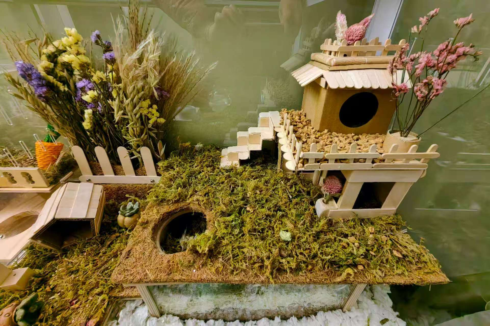

Designs
Habitats and toys



Beyond Work
I began making habitats and toys because many products on the market are vague about whether their materials are safe, and I wanted more control over what my hamster actually lives with. Designing for her then became important to me in a deeper way: it asks me to think at once about the whole environment, the interaction of small parts, and the need to keep observing and adjusting to what another creature actually needs. That habit of mind feels very close to how I approach research.
Designs
